state abb region population total
1 Alabama AL South 4779736 135
2 Alaska AK West 710231 19
3 Arizona AZ West 6392017 232
4 Arkansas AR South 2915918 93
5 California CA West 37253956 1257
6 Colorado CO West 5029196 65
# add text layer to scatterplotp <-ggplot(data = murders)p +geom_point(aes(population/10^6, total)) +geom_text(aes(population/10^6, total, label = abb))
Example of aes() behavior
# no error from this callp_test <- p +geom_text(aes(population/10^6, total, label = abb))
Example of aes() behavior
# error - "abb" is not a globally defined variable # and cannot be found outside of aesp_test <- p +geom_text(aes(population/10^6, total), label = abb)
Error in list2(parse = parse, check_overlap = check_overlap, na.rm = na.rm, : object 'abb' not found
Aesthetics scoping
Each geometry function has its own arguments that can be used to tinker with the visualization
These arguments are not aesthetic mappings: they affect all data points the same way.
Aesthetics scoping
Global aesthetic mappings apply to all geometries and can be defined when you initially call ggplot().
Local aesthetic mappings are called within the geometry function add additional information or override the default mappings.
Building a plot using layers
p <- murders %>%ggplot(aes(population/10^6, total, label = abb))p
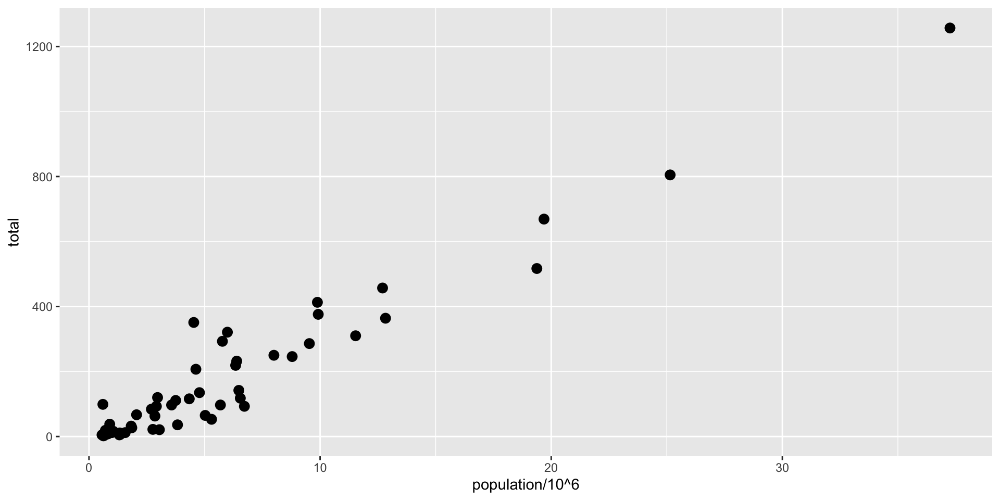
Add points
p +geom_point(size =3)
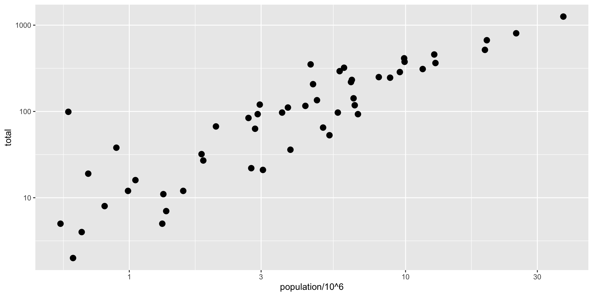
Log the axes
p +geom_point(size =3) +scale_x_continuous(trans ="log10") +scale_y_continuous(trans ="log10")
Shorthand for logging axes
p +geom_point(size =3) +scale_x_log10() +scale_y_log10()
Add labels
p +geom_point(size =3) +scale_x_log10() +scale_y_log10() +geom_text()
Nudge the labels
p +geom_point(size =3) +scale_x_log10() +scale_y_log10() +geom_text(nudge_x =0.075)
p <- p +geom_point(size =3) +scale_x_log10() +scale_y_log10() +geom_text_repel() +xlab("Population in millions (log scale)") +ylab("Total number of murders (log scale)")p
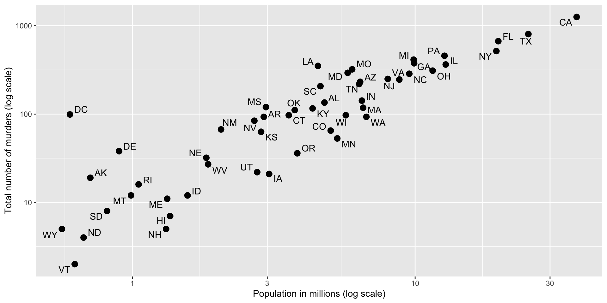
Add a title
p +ggtitle("US Gun Murders in 2010")
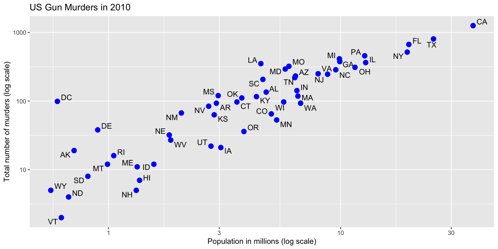
Turn all points blue
p +ggtitle("US Gun Murders in 2010") +geom_point(size =3, color ="blue")
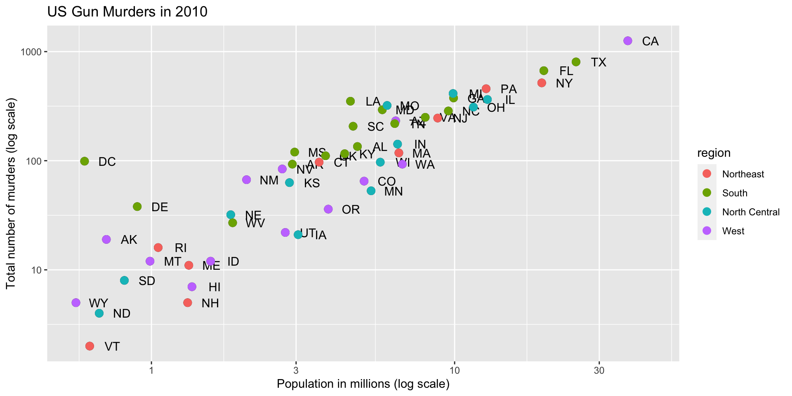
Color by region
p +ggtitle("US Gun Murders in 2010") +geom_point(aes(color = region), size =3)
# basic line with average murder rate for the countryp +ggtitle("US Gun Murders in 2010") +geom_point(aes(color = region), size =3) +geom_abline(intercept =log10(r)) # slope is default of 1
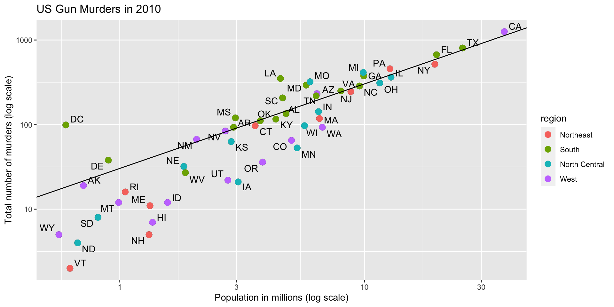
Edit appearance of line
# basic line with average murder rate for the countryp +ggtitle("US Gun Murders in 2010") +geom_point(aes(color = region), size =3) +geom_abline(intercept =log10(r), lty =2, color ="darkgrey")
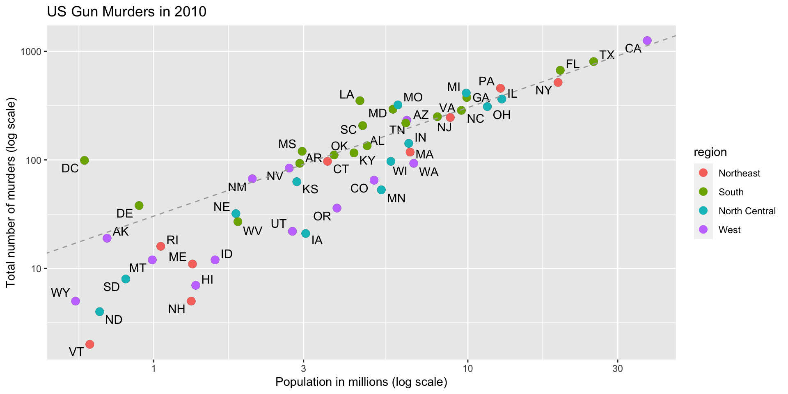
Edit legend
# basic line with average murder rate for the countryp +ggtitle("US Gun Murders in 2010") +geom_point(aes(color = region), size =3) +geom_abline(intercept =log10(r), lty =2, color ="darkgrey") +scale_color_discrete(name ="Region")
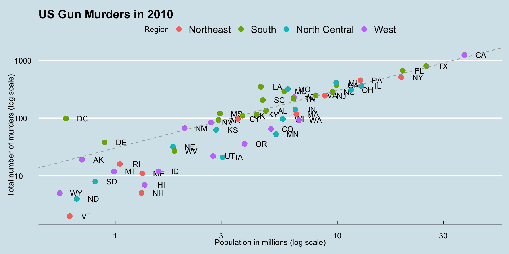
Themes
install.packages("ggthemes")
Themes
library(ggthemes)p +theme_economist()
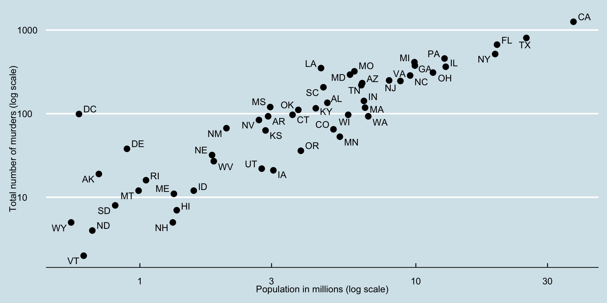
Themes
library(ggthemes)p +theme_fivethirtyeight()
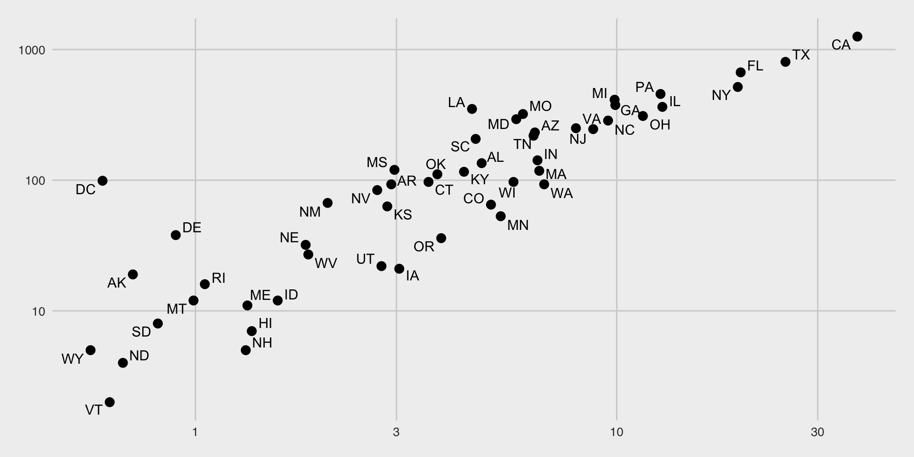
More useful geoms
geom_histogram() for histograms
use binwidth to change binwidth
geom_density() for smooth density plots
geom_qq() creates a quantile-quantile plot.
use sample argument.
By default, the data are compared to a normal distribution with a mean of 0 and standard deviation of 1
# histogram with blue fill, black outline, labels and titlep +geom_histogram(binwidth =1, fill ="blue", col ="black") +xlab("Male heights in inches") +ggtitle("Histogram")
geom_density() in action
p +geom_density()
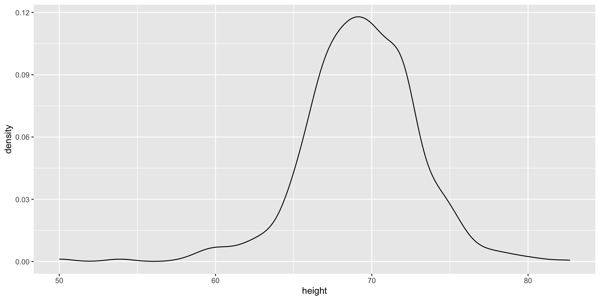
geom_density() in action
p +geom_density(fill ="blue")
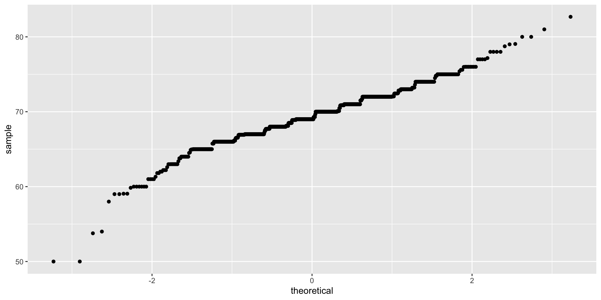
geom_qq() in action
# basic QQ-plotp <- heights %>%filter(sex =="Male") %>%ggplot(aes(sample = height)) # we require sample param! p +geom_qq()
geom_qq() in action
# QQ-plot against a normal distribution with same mean/sd as dataparams <- heights %>%filter(sex =="Male") %>%summarize(mean =mean(height), sd =sd(height))p +geom_qq(dparams = params) +geom_abline()
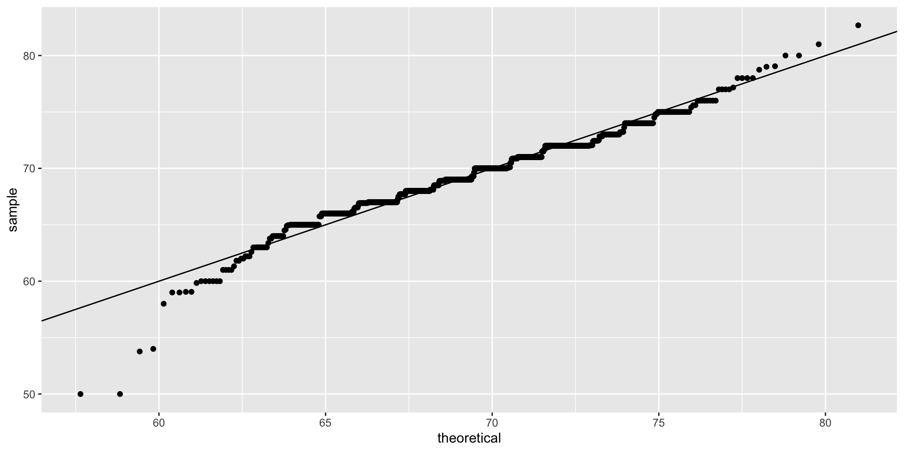
Faceting
Faceting makes several plots at once, side-by-side, to facilitate comparison
facet_grid(a~b) facets by two variables, a (rows) and b (cols)
to facet by only one variables, use . for the other variable e.g. facet_grid(.~b)
facet_wrap() facets by one variable but wraps the plots over multiple lines
axes are constants
Faceting in action
data(gapminder)# facet by continent and yearfilter(gapminder, year %in%c(1962, 2012)) %>%ggplot(aes(fertility, life_expectancy, col = continent)) +geom_point() +facet_grid(continent ~ year)
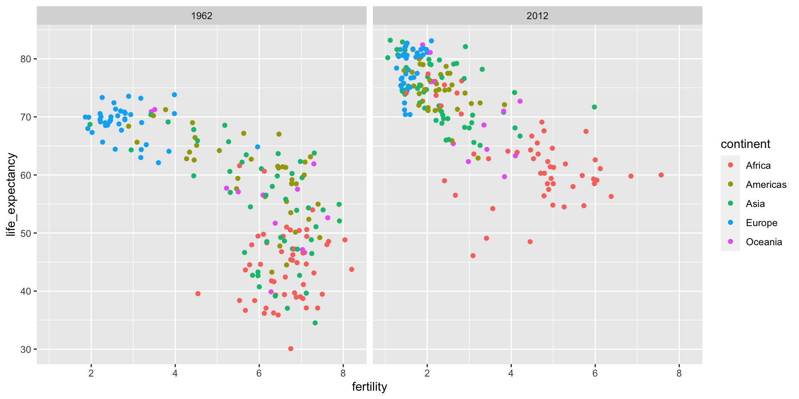
Faceting in action
# facet by year onlyfilter(gapminder, year %in%c(1962, 2012)) %>%ggplot(aes(fertility, life_expectancy, col = continent)) +geom_point() +facet_grid(. ~ year)
Faceting in action
# facet by year, plots wrapped onto multiple rowsyears <-c(1962, 1980, 1990, 2000, 2012)continents <-c("Europe", "Asia")gapminder %>%filter(year %in% years & continent %in% continents) %>%ggplot(aes(fertility, life_expectancy, col = continent)) +geom_point() +facet_wrap(~year)
# fertility time series for two countriesgapminder %>%filter(country %in%c("Germany", "Australia")) %>%ggplot(aes(year, fertility, col = country)) +geom_line()
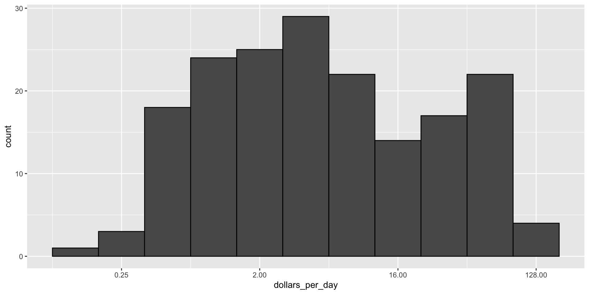
Histograms
# add dollars per daygapminder <- gapminder %>%mutate(dollars_per_day = gdp/population/365)gapminder %>%filter(!is.na(gdp)) %>%ggplot(aes(dollars_per_day)) +geom_histogram(binwidth =1, color ="black") +scale_x_continuous(trans ="log2")
Histograms
# add dollars per daygapminder <- gapminder %>%mutate(dollars_per_day = gdp/population/365)gapminder %>%filter(!is.na(gdp)) %>%ggplot(aes(dollars_per_day)) +geom_histogram(binwidth =1, color ="black") +scale_x_continuous(trans ="log2")
Histograms
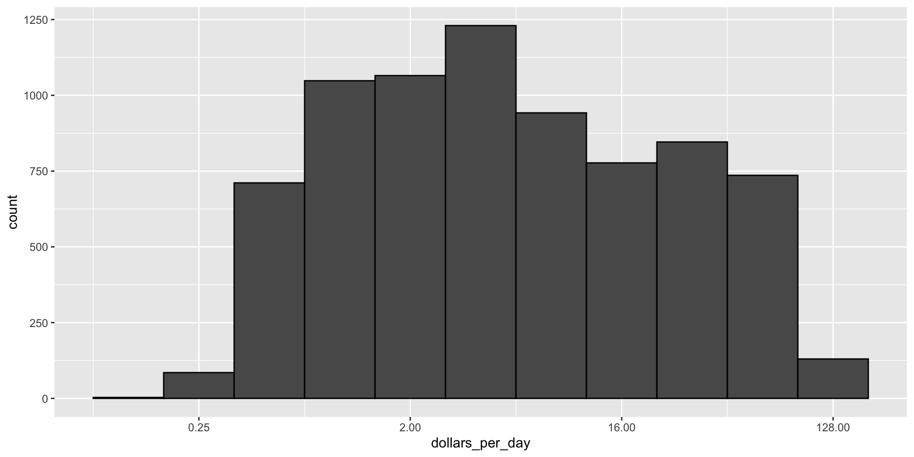
Exercise
Make a boxplot of daily income per person by region in 1970
Exercise
Make a boxplot of daily income per person by region in 1970